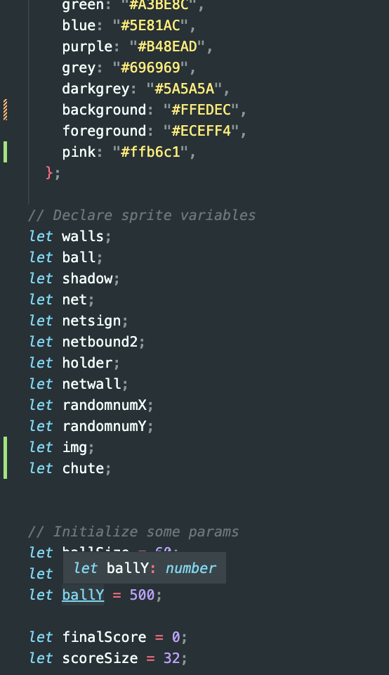
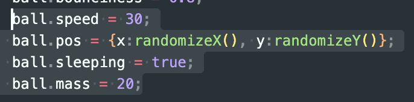
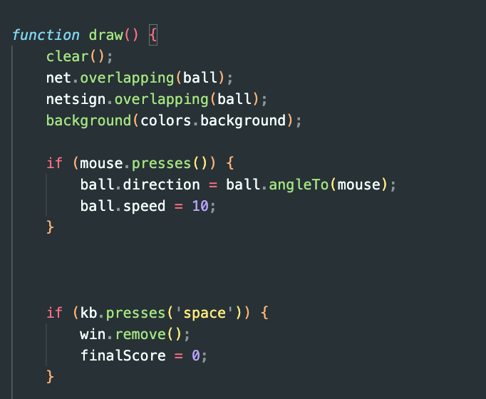

Overview and Usage
In my game, I replicated a two dimensional basketball game which awards the user points at 10 point increments, and once the user
reaches 40 points the player wins and can choose to play again. In order to run the code you must click the link below.
Basketball Game
To play the game, you can click on the screen, and the ball will follow the mouse. In order to get points, you must aim the ball into the hoop
or bounce off the wall.
Development Process
- Before beginning this assignment, I followed the development toolchain activity from class
and followed the P5 Play website's tips and tutorials. After learning the basic steps and functions
I began designing the game and ideating. After learning the functions and understanding the reasoning behind each
functions, I started working on declaring color constants and initializing variables.

- Next I moved on to my function called SetUpBall in which I set up the shape, look, and characteristics of the ball. I
did the exact same process for the SetUpNet function which lead to my next step.
- For my next step I set up the relationship between the ball and the net. I wanted to the ball to overlap the net whenever
it went through the hoop.
- Next, I made a randomized function for X and Y coordinates to change the coordinates of the ball whenever the page is reloaded
or the game is restarted.

- The most important function of the game was the draw function which included an if statement that directed the ball towards the location
that the mouse is clicked.

Issue Deep-Dive
- I ran into many issues while making this game. The first issue was making the ball move towards the location that the mouse is clicked. I originally used
the moveTo functiom, but the issue with this was that the ball would stop moving when it moved towards where the mouse was, and it would fall down, instead
of a natural throw of a ball and an angle down. To fix this, I used an if statement that stated that once the mouse is clicked the ball will move towards the mouse,
but it will move in a natural motion relative to gravity. Another problem that I had was the drawScore function. I ended up resolving this by using another if statement.
Roughly, the if statement stated that if the ball overlaps with the net, the player gains ten points on the draw board.
Ideas and Future
- In the future, I would like to change the shape of the ball, and make it more fluid, so when it hits the wall it changes the shape of the ball slightly and then
goes back to the original shape. I would also like to incorporate my own design into the ball therefore when the ball hits the wall, the rotation of the ball can give a more
realistic feel.
Kudos
Kudos to my boyfriend for acting as a rubber ducky while I explained my problems to him, and it ended up helping me so much to teach someone else.